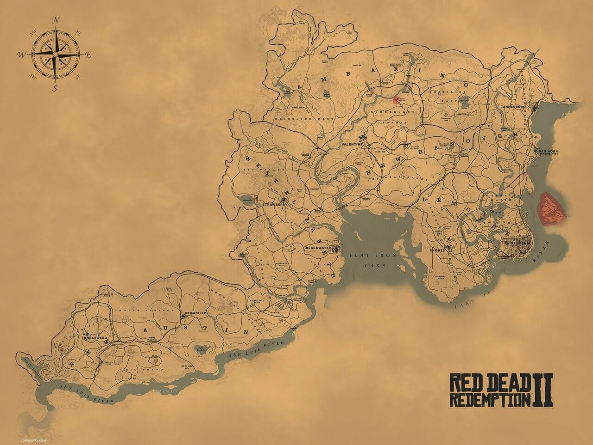
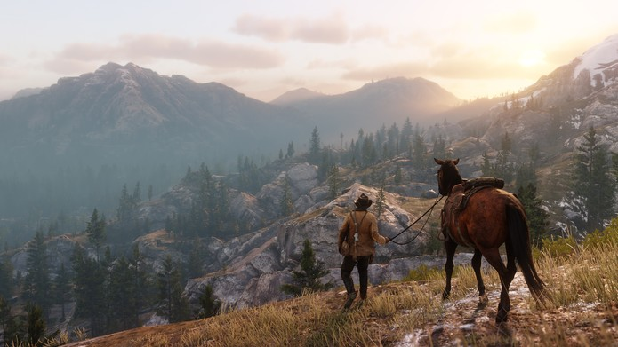

|  |
| Em termos visuais, Red Dead Redemption 2 reproduz uma variedade incrível de cenários. Graças à um mapa gigantesco – o maior já feito pela Rockstar -, o personagem principal passa por uma série de paisagens, como campos desérticos, matas fechadas e montanhas com gelo. A fidelidade das imagens criam uma verdadeira experiência contemplativa para o jogador. O mundo de Red Dead Redemption 2 abrange cinco estados fictícios dos Estados Unidos. Os estados de New Hanover, Ambarino e Lemoyne são novos para a série, e estão localizadas ao norte e leste no mapa, enquanto os estados de New Austin e West Elizabeth retornam de Red Dead Redemption. Os estados estão centralizados em San Luis e Lannahechee Rivers e nas margens de Flat Iron Lake. Ambarino é um deserto de montanhas, com o maior assentamento sendo uma reserva de nativos americanos; New Hanover é um vale amplo que se tornou um centro industrial e é o lar da cidade pecuária de Valentine; e Lemoyne é composto por bayou e plantações semelhantes à Luisiana, e abriga a cidade de Rodes, no sul, e a antiga colônia francesa de Saint Denis, análoga a Nova Orleans. West Elizabeth consiste em amplas planícies, florestas densas e a moderna cidade de Blackwater. Esta região foi expandida a partir do primeiro Red Dead Redemption para incluir uma vasta porção norte contendo a pequena cidade de Strawberry. New Austin é uma região árida do deserto, centrada nas cidades fronteiriças de Armadillo e Tumbleweed, também presentes no jogo original. Partes de New Austin e West Elizabeth foram redesenhadas para refletir tempos mais antigos; por exemplo, Blackwater ainda está em construção, enquanto Armadillo se tornou uma cidade fantasma por causa de um surto de cólera. |
|  |
| Esse é o jogo da Rockstar com o maior número de locais possíveis de se entrar em cidades. Os itens espalhados pelo mundo, e aqui estamos falando de quase tudo mesmo, do que está em cima da bancada do vendedor até o que está dentro de guarda roupas das pessoas nas cidades, foram pensados para que o jogador de alguma forma possa interagir com eles. Todos os NPCs do jogo poderão ser abordados para interagir com o jogador. Conforme jogar, você atravessará montanhas nevadas, planícies enormes, pântanos assustadores e cidades cheias de gente. O jogo faz uma transição maravilhosa entre ambientes externos e internos, uma realização raramente vista. A vida selvagem é um destaque a parte, com quase 200 animais entre pássaros, peixes e mamíferos em geral, todos nativos daquela região dos Estados Unidos. Cada animal terá comportamento próprio, portanto não se assuste ao ver águias caçando, abutres voando em torno de carcaças e ursos pescando na beira do lago. Bisões por exemplo migram juntos e cavalos selvagens podem ser vistos e capturados na natureza. Portanto se prepare para imergir em uma ambientação típica do velho oeste americano, com caubóis, bandidos, grandes roubos e com o máximo de cuidado para que tudo seja extremamente orgânico. |